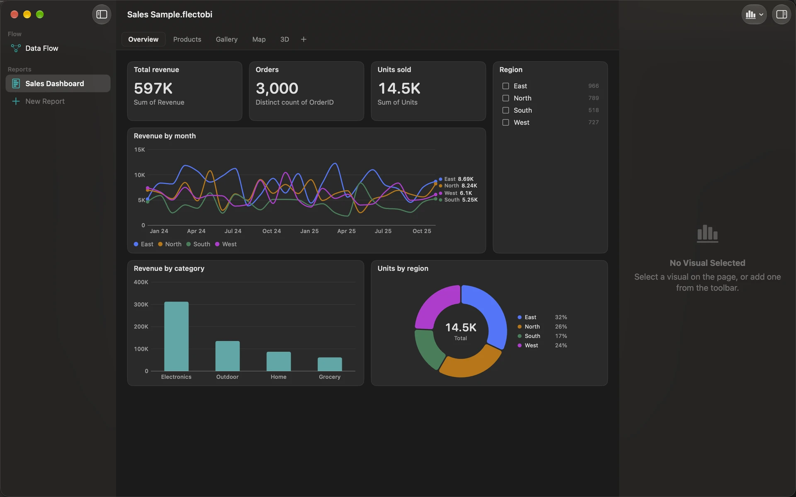

NA‑03
A Mac app
FlectoBI

Transform. Analyze. Visualize. FlectoBI turns the files you clean every week into a Flow you can run again, and a Report that refreshes with it. It runs on your Mac, keeps your data there, and needs no code.
NinjaApps presents FlectoBI · data prep and dashboards · Flows of Steps · Reports of Pages · 26 Transforms · no code · your data stays on your Mac · requires macOS 26 or later and a Mac with Apple silicon
Prepare the data. Show it.


The pictures show the sample Workbook that comes with FlectoBI. Its data is made up.
One Workbook for both jobs
Most teams use one tool to clean a file and another to chart it. FlectoBI does both in a single Workbook. You build a Flow of Steps that shapes your data, and a Report of Pages that shows it. When the files change, you refresh, and everything follows.
A Workbook stores the recipe, not the data. The data is read again from your files and databases each time the Workbook opens, and FlectoBI never writes over a source file.
It is made for people who work with spreadsheets and exports every week, such as analysts in operations, sales and finance, and consultants who receive client files and hand back Reports. No programming is needed, and nothing is hidden: you can see the data at every Step.
Shape the data, one Step at a time
26 TRANSFORMSA Flow is a canvas of Steps: Inputs bring data in, Transforms change it, and Outputs write it out. Click any Step to see its data in a table below the canvas, as it is at that point. You never have to guess what a Step did.
- 26 Transforms in five groups: Rows, Columns, Text, Combine and Reshape. They include Filter, Sort, Join, Stack, Summary, Pivot and Unpivot.
- A live preview at every Step. Change an option and the table and every Step after it update. A Step that cannot run says why.
- Formulas that read like a spreadsheet:
round([Units] * [UnitPrice] * (1 - [Discount]), 2). When one is wrong, the message is in plain English and names the fix, for example a column you may have meant. - Search for a Transform by typing. Names, common words and the first letters all find it.
- Column profile for any Column: counts, empty Values, the range and the most frequent Values.
- Undo for every edit, with the name of what it undoes.
The data engine underneath is DuckDB, built into the app, so large files stay responsive on a laptop.
Charts that follow the Flow
A Report is made of Pages. Each Page is a grid where you place Visuals and give each one a Dataset from a Step. You fill a Visual by dropping Columns into its Field Wells, and choose how to add them up: Sum, Average, Median, Min, Max, Count or Distinct count.
- Visual kinds: Column, Bar, Line, Area, Pie, Donut, Scatter, Heatmap, Funnel, Bubble Map, Filled Map, Table, Card, Slicer, 3D Scatter, Surface Plot and Spike Map.
- Cross-filtering. Click a bar, a slice or a place and every other Visual on the Page that has the same Column narrows to that Selection. Use a Slicer to choose values from a list. A chip at the top of the Page says what filters it, and a dot marks each filtered Visual.
- Refresh. A Report reads only the output of Steps, so when the Flow runs again the Report is current.
Places and a third measure
A Filled Map colours countries, states and regions by a Value. A Bubble Map puts a bubble on each place, sized by area, from names or from latitude and longitude. Both work offline: the shapes and the place names come with the app, and no map service is called.
Where there is a real third measure, FlectoBI can show it in 3D: a 3D Scatter with an optional fitted surface, a Surface Plot, a Spike Map and a Globe view. They turn only when you turn them, with a drag or with Command and the arrow keys.

Bring data in, write it out
Drop files onto the Flow, or choose Add Input. Each Input keeps its own options, such as the delimiter, the encoding, the sheet or the range, and you can refresh it whenever the source changes.
| Kind | Input | Output |
|---|---|---|
| Text and spreadsheets | CSV, TSV and text, Excel, ODS | CSV, TSV, Excel (.xlsx) |
| Structured files | JSON, JSON Lines, Parquet, SQLite | JSON, JSON Lines, Parquet |
| Databases | PostgreSQL, MySQL and MariaDB | Not applicable |
Databases are read only. FlectoBI copies a table or the result of a query into its engine as a snapshot, and never writes to the server. The Workbook keeps only the connection details. Passwords go to your Mac’s Keychain, never into the Workbook.
An Output writes only when you ask, with Write Now or Write All Outputs. You can turn on automatic writing after that. FlectoBI refuses an Output that would overwrite a file the Flow reads.
Private by design
- Your data stays on your Mac. All processing happens locally. FlectoBI never uploads your data.
- Sandboxed. FlectoBI opens only the files and folders you choose, and you can see and remove each one in Settings. Excel files are read by a separate helper that has no network or file access of its own.
- No account, and no tracking. There is nothing to sign in to. The privacy manifest declares no tracking and no collected data.
- Maps work offline. No map tiles or lookup services are used.
- The only network use is a database you connect to. FlectoBI talks to the host and port you type, and to nothing else.
The privacy policy has the details.
Built for the Mac
FlectoBI is a native Mac app, not a web page in a window. It follows what you set in macOS.
- Keyboard. You can build a Flow and arrange a Report without the mouse: Tab moves between Steps and Visuals, the arrow keys move and resize, and typing a letter on the canvas opens the Transform search.
- VoiceOver. Steps and Visuals expose actions, and charts have spoken summaries.
- Light, Dark and Increase Contrast. The chart colours are chosen to stay apart for people with colour blindness.
- Reduce Motion. When it is on, nothing in a chart moves or grows.
- Documents. A Workbook is one file, autosaved, with Undo and Redo, and a window of its own.

Start here
FlectoBI includes a sample Workbook that opens offline and shows every kind of Visual. Choose Help, then Open Sample Workbook.
- The guide explains each part of the app, from adding an Input to sharing a Workbook.
- The tutorials take you through a task from start to finish.
- Support answers common questions and tells you how to reach us.